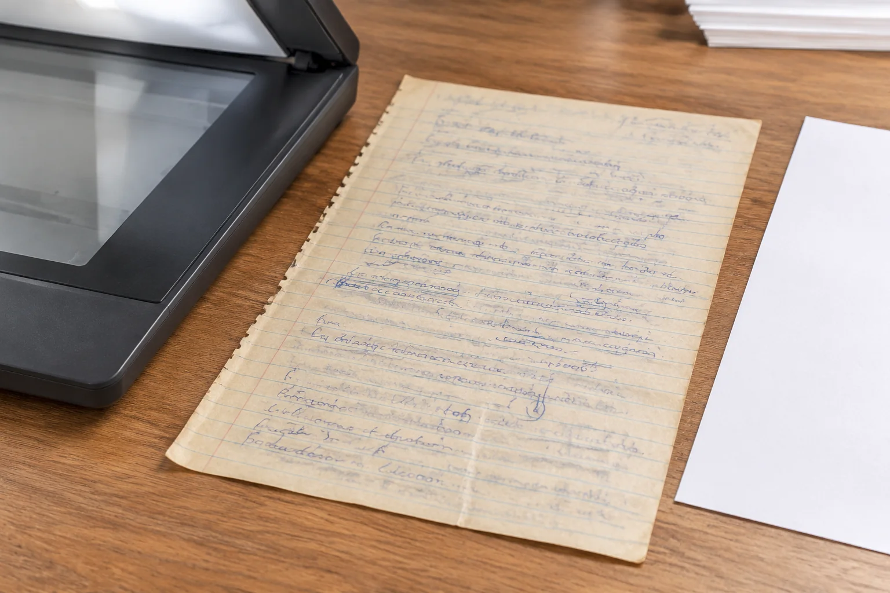

西安旧笔记扫描出现背面透字，正文与干扰怎样区分记录
纸张较薄时，背面的文字可能透到正面。增加对比度未必让正文更好读，反而可能把背景干扰一起加深。

先确认纸面方向
西安模仿笔迹参考出现淡字时，应先看它是否来自背面透印，而不是直接当成正面补写。完整页与对应背面有助于查找线索，但图像不足时不必强行分辨每一条线。原图保持不变，必要说明写在目录中，不用修补软件把不确定部分全部擦掉。同一页正反面如能配套保存，可各设子编号。无法确认是否属于同一张纸时，先保留为待核对关系，不因纸色相近就直接合并。
局部清晰度单独检查
模仿签名、模仿签字的细线若与透字重叠，可能难以从缩略图中辨认。可以补充清楚近照并注明位置，不从其他姓名样本借线条。模仿笔迹长文的版面观察与局部墨线观察范围不同，哪部分可读、哪部分受影响，应分别记录。
处理版不冒充原始记录
笔迹鉴定资料制作去背景副本时，应同时保留未经处理的版本。调整后看着更干净，不代表所有留下的边缘都准确，所有擦掉的淡线也未必无关。能补原件扫描就补材料，不能补时说明局限，避免把处理结果误当成纸上原来的全部信息。